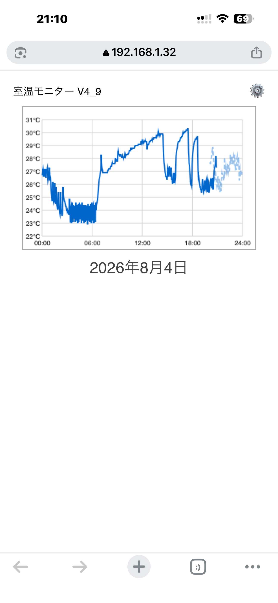

室温モニターシステム 作業中 #002
室温モニターシステム 作業中#002
現状

画像1は5V XXX-AのUSB電源を用い、温度センサー接続抵抗が4.9KΩに対する観測結果である。
まず観察できることは、クーラー動作中は1.5°程度の上下がある。クーラーを切って温度上昇中、またはクーラーを入れて温度下降中はそのような上下は見られない。
原因として考えらるのは２つ。
温度センサーに付属する抵抗値が不適当
現在4.9KΩであるところを1/2~1/4の値にする。
5V電源をより容量の大きいものにする
仕組み
温度測定メカニズム
GPIO15に温度センサーDS18B20を接続する。
WiFi構築メカニズム(Wi-Fiプロビジョニング）
機器の初期状態では自宅のWi-Fiルータのパスワードが設定されていません。そこで、まず機器自体が親機(AP)となり
スマホから機器の設定画面を開き、自宅のWi-Fi情報を入力して機器に記憶させます。次に機器はAPモードを終了し、
子機（STA)として自宅のルーターに接続します。なお、スマホがAPモードの機器に接続している時点でスマホは
インターネットとは遮断されていることに注意。
Wi-Fi情報はESP32の不揮発性メモリに記憶します。
グラフ表示メカニズム
>p?ブラウザ上で48時間分の室温データが表示される。固定で昨日の00:00から23:59、今日の00:00から23:59の室温データ
が表示される。昨日分は点線で表示される。ESP32でグラフを作成してスマホに表示するのではなく、ブラウザにグラフの枠データと
温度の線分データを送信し、ブラウザ上で線分を描画する。
元のページに戻る